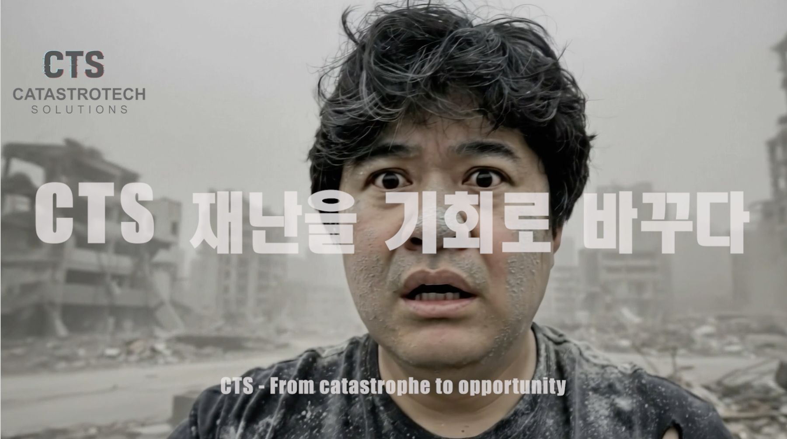
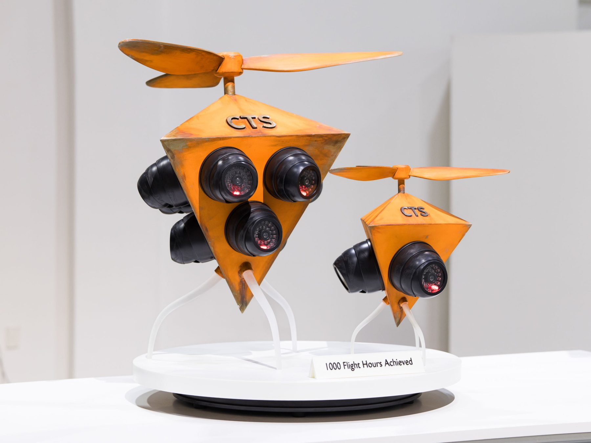
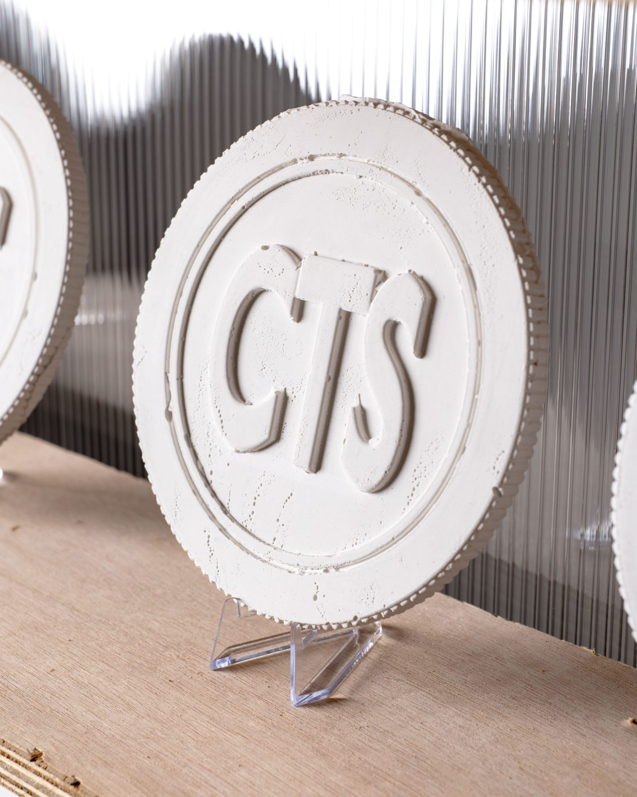
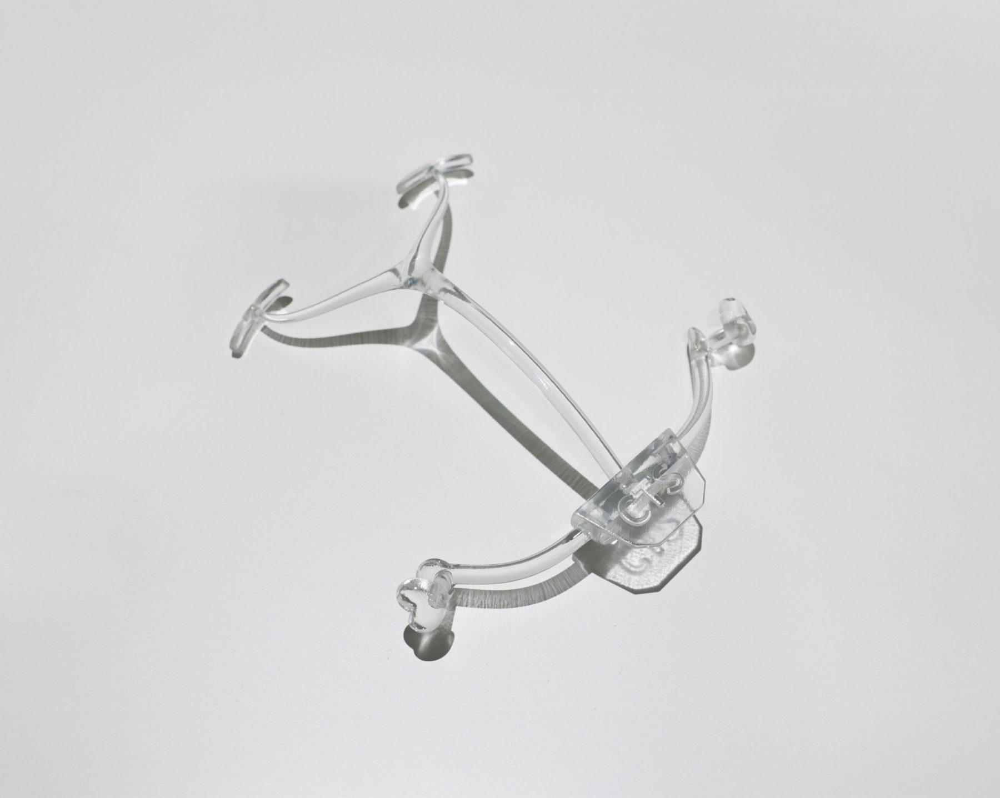
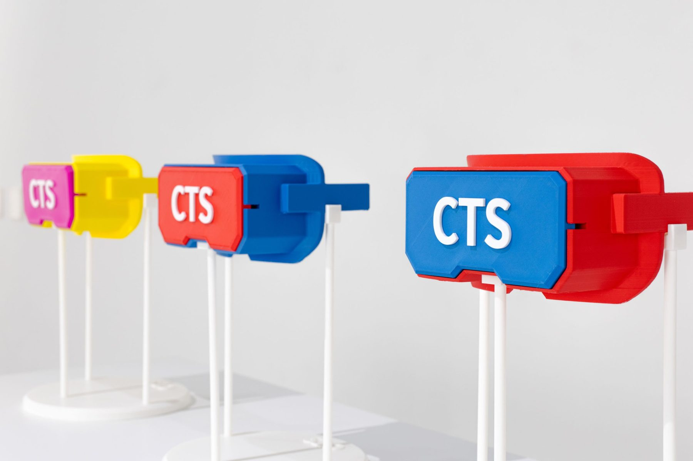
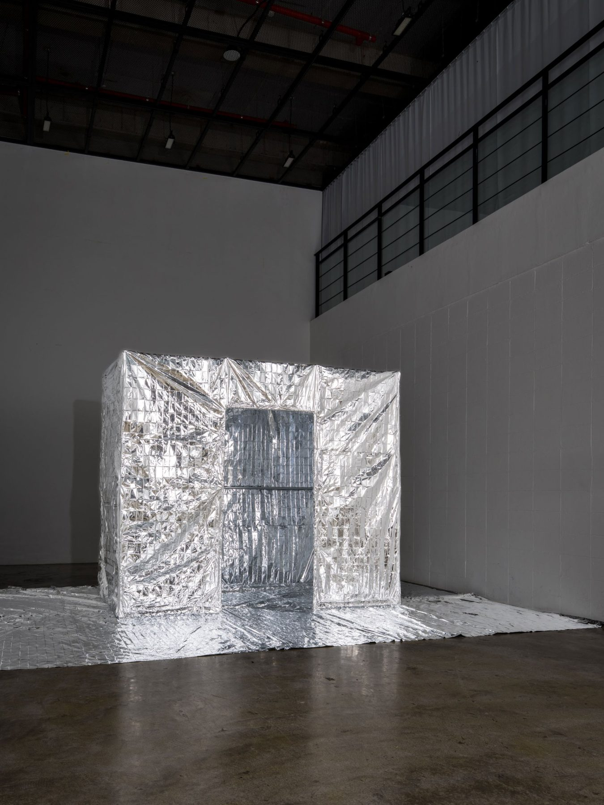

CTS(CatastroTech Solutions)는 인류의 안전과 감정 안정을 위한 기술을 만듭니다.
위기의 시대, CTS가 함께합니다. 대표이사 맥스웰 브링크.
CTS 홍보영상과 회사 정보.
CTS의 다음 핵심기술. 2027년 공개 예정입니다.
CTS 부설기관. 분류하기 어려운 것들을 조사하고 판정합니다.
2025. 10. 20 – 11. 3 · 부산 홍티아트센터. CTS의 첫 팝업스토어.




